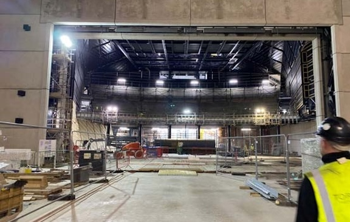

Factory International- Aviva Studios
A World Class Space to Celebrate Arts of All Kind.

Designed to be the new home of the Manchester International Festival this venue is truly flexible and one of a kind. Working alongside Consultants CharcoalBlue and main contractors Laing O'Rourke we helped to create a space for exhibitions, concerts and performances from poetry to Musicals. With the largest Fibre Optic network we have installed to date and an abundance of power, data and control this has to be one of the most flexible and able spaces in the world today. We are all excited to see shows and presentations at this venue for many years to come.
Perhaps the biggest challange of the Factory International project was completing it during a Pandemic. Although building works continued during national lockdown the supply chain was deeply effected. Still the project continued we are proud to have completed the works and created a truly iconic venue.